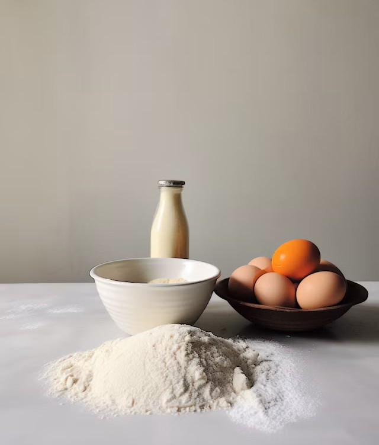

Ingredientes elegidos
Buscamos calidad y frescura en cada preparación.
UN LUGAR PARA LOS ANTOJOS BONITOS
Pasteles y postres preparados con dedicación, ingredientes seleccionados y ese toque casero que hace especial cada ocasión.
Descubrir el menú ↗HECHO CON AMOR

LO QUE NOS INSPIRA
Khanom bakery nace del gusto por crear postres que acompañen momentos cotidianos y celebraciones. Nos inspiran las recetas cuidadas, las sobremesas largas y compartir algo rico con quienes queremos.
Cada preparación busca equilibrar sabor, textura y una presentación sencilla, sin perder la calidez de lo hecho a mano.
NUESTRA ESENCIA
Buscamos calidad y frescura en cada preparación.
Nos importa tanto el sabor como la experiencia.
Postres pensados para acompañar tus ocasiones especiales.
KHANOM BAKERY
PASTELERÍA ARTESANAL